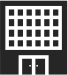

Паспорт безопасности объекта
Умеренные цены, высокое качество
Разработка акта категорирования и паспорта антитеррористической
безопасности от высококвалифицированных специалистов
Что такое антитеррористический паспорт?
Антитеррористический паспорт (паспорт антитеррористической защищенности) – это информационный документ, содержащий справочную информацию о защищенности объекта массового пребывания людей от террористических угроз.
Для чего нужен паспорт?
В случае нештатной ситуации, спецслужбы изучают антитеррористический паспорт объекта, который подвергся атаке и основываясь на его данных, планируют дальнейшие действия: эвакуацию, проведение спецопераций или спасательных работ. Согласно статьи 19.5.1 КоАП РФ возможно наложение административного штрафа на юридических лиц - от 300 000 до 1 000 000 рублей или административное приостановление деятельности на срок до 90 суток.
КОМУ НУЖЕН ПАСПОРТ БЕЗОПАСНОСТИ?
| Торговля. Магазины, торговые центры и др. объекты розничной торговли |
Образование. Детские сады, школы, высшие учебные заведения, учреждения дополнительного образования |
Досуг. Кинотеатры, театры, музеи и др. учреждения культуры |
Медецина. Больницы, поликлиники, другие учреждения здравоохранения |
Предприятия. Заводы, фабрики, организации и т.д. |
||||||
| Спорт. Объекты физической культуры и спорта |
Отдых. Гостиницы, хостелы, пансионаты, дома отдыха |
Общепит. Предприятия общественного питания (рестораны, кафе и др.) |
 | Социальная защита. Учреждения социального обслуживания населения |
Государственные учреждения. Административные здания |
Этапы получения паспорта
| Мы предлагаем лучшую цену, так как не несем дополнительных издержек на согласование документа, мы даем инструкции, как максимально быстро это сделать. Расчет стоимости соответствует реально выполняемым работам. |
|
| Специалист лично принимает участие в оказании услуги с момента консультирования и до передачи готовых документов Заказчику, не передоверяя и не разглашая конфиденциальную информацию. |
|
| Наши специалисты с большим профессиональным опытом в силовых структурах имеют практические знания в сфере антитеррористической защищенности и безопасности различного рода объектов. Мы всегда на связи и оказываем бесплатную консультативную помощь после завершения сделки. |